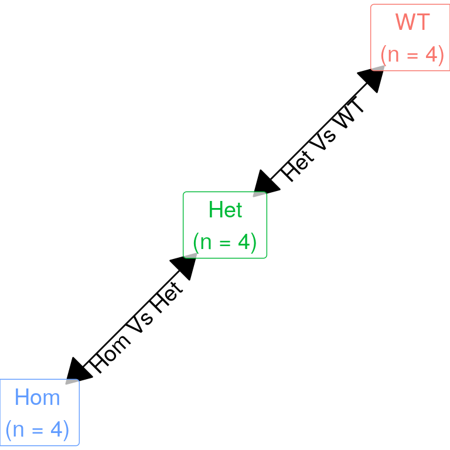

Last updated: 2020-01-22
Checks: 6 1
Knit directory: 20170327_Psen2S4Ter_RNASeq/
This reproducible R Markdown analysis was created with workflowr (version 1.6.0). The Checks tab describes the reproducibility checks that were applied when the results were created. The Past versions tab lists the development history.
The R Markdown file has unstaged changes. To know which version of the R Markdown file created these results, you’ll want to first commit it to the Git repo. If you’re still working on the analysis, you can ignore this warning. When you’re finished, you can run wflow_publish to commit the R Markdown file and build the HTML.
Great job! The global environment was empty. Objects defined in the global environment can affect the analysis in your R Markdown file in unknown ways. For reproduciblity it’s best to always run the code in an empty environment.
The command set.seed(20200119) was run prior to running the code in the R Markdown file. Setting a seed ensures that any results that rely on randomness, e.g. subsampling or permutations, are reproducible.
Great job! Recording the operating system, R version, and package versions is critical for reproducibility.
Nice! There were no cached chunks for this analysis, so you can be confident that you successfully produced the results during this run.
Great job! Using relative paths to the files within your workflowr project makes it easier to run your code on other machines.
Great! You are using Git for version control. Tracking code development and connecting the code version to the results is critical for reproducibility. The version displayed above was the version of the Git repository at the time these results were generated.
Note that you need to be careful to ensure that all relevant files for the analysis have been committed to Git prior to generating the results (you can use wflow_publish or wflow_git_commit). workflowr only checks the R Markdown file, but you know if there are other scripts or data files that it depends on. Below is the status of the Git repository when the results were generated:
Ignored files:
Ignored: .Rhistory
Ignored: .Rproj.user/
Untracked files:
Untracked: analysis/figure/
Unstaged changes:
Modified: analysis/2_DifferentialExpression.Rmd
Modified: analysis/index.Rmd
Note that any generated files, e.g. HTML, png, CSS, etc., are not included in this status report because it is ok for generated content to have uncommitted changes.
These are the previous versions of the R Markdown and HTML files. If you’ve configured a remote Git repository (see ?wflow_git_remote), click on the hyperlinks in the table below to view them.
| File | Version | Author | Date | Message |
|---|---|---|---|---|
| html | b096ad9 | Steve Ped | 2020-01-21 | Recompiled index |
| Rmd | 01512da | Steve Ped | 2020-01-21 | Added initial DE analysis to index |
| Rmd | fbb6242 | Steve Ped | 2020-01-21 | Paused DE analysis |
| html | fbb6242 | Steve Ped | 2020-01-21 | Paused DE analysis |
| html | f154205 | Steve Ped | 2020-01-20 | Got rid of pointless warning |
| Rmd | bc12101 | Steve Ped | 2020-01-20 | Added bash pipeline |
| html | bc12101 | Steve Ped | 2020-01-20 | Added bash pipeline |
| html | f65bf66 | Steve Ped | 2020-01-20 | Removed License & updated text for PCA |
| Rmd | 39d0381 | Steve Ped | 2020-01-20 | Finished QC |
| html | 39d0381 | Steve Ped | 2020-01-20 | Finished QC |
| Rmd | acb4f8a | Steve Ped | 2020-01-19 | Start workflowr project. |
library(tidyverse)
library(tidygraph)
library(ggraph)samples <- read_csv("data/samples.csv") %>%
distinct(sampleName, .keep_all = TRUE) %>%
dplyr::select(sample = sampleName, sampleID, genotype) %>%
mutate(genotype = factor(genotype, levels = c("WT", "Het", "Hom")))This dataset is an analysis of RNASeq data from a 3-way comparison of WT zebrafish with Heterozygous mutants (psen2S4Ter/+) and Homozygous mutants psen2S4Ter/S4Ter. The psen2S4Ter mutant allele is expected to be a premature termination of the psen2 gene, but instead an alternate downstream start site resulted in a near full-length transcript with significant similarity to a conventional Early Onset Familial Alzhemier’s Disease mutation.
The expected comparisons are shown below:
create_ring(3) %>%
mutate(
name = paste0(levels(samples$genotype), "\n(n = 4)"),
name = factor(name, levels = name)
) %>%
activate(edges) %>%
mutate(comparison = c("Het Vs WT", "Hom Vs Het", "Hom Vs WT")) %>%
ggraph(layout = "kk") +
geom_edge_link2(
aes(label = comparison),
angle_calc = "along",
label_dodge = unit(0.02, "npc"),
start_cap = circle(0.09, "npc"),
end_cap = circle(0.09, "npc"),
label_size = 5,
arrow = arrow(
length = unit(0.06, "npc"),
ends = "both",
type = "closed"
)
) +
geom_node_label(
aes(label = name, colour = name),
size = 5,
fill = rgb(1,1,1,0.7),
label.padding = unit(0.4, "lines")
) +
scale_y_continuous(expand = expand_scale(0.1)) +
scale_x_continuous(expand = expand_scale(0.1)) +
theme_void() +
theme(
legend.position = "none"
) 
All samples were female, 6 months old and raised in the same tank as a family, to minimise variability. This age represents sexual maturity and is expected to model a pre-symptomatic brain. Fish were all killed and genotyped by tail-clipping on 07-07-2016.
RNAseq was performed on total RNA (i.e. ribo-reduced) from whole brain tissue, with \(n=4\) samples in each group. Sequencing was performed by the sequencing facility at the Centre for Cancer Biology in Adelaide, using an Illimuna NextSeq. Reads were provided in as paired-end, 150bp reads.
devtools::session_info()─ Session info ───────────────────────────────────────────────────────────────
setting value
version R version 3.6.2 (2019-12-12)
os Ubuntu 18.04.3 LTS
system x86_64, linux-gnu
ui X11
language en_AU:en
collate en_AU.UTF-8
ctype en_AU.UTF-8
tz Australia/Adelaide
date 2020-01-22
─ Packages ───────────────────────────────────────────────────────────────────
package * version date lib source
assertthat 0.2.1 2019-03-21 [2] CRAN (R 3.6.0)
backports 1.1.5 2019-10-02 [2] CRAN (R 3.6.1)
broom 0.5.3 2019-12-14 [2] CRAN (R 3.6.2)
callr 3.4.0 2019-12-09 [2] CRAN (R 3.6.2)
cellranger 1.1.0 2016-07-27 [2] CRAN (R 3.6.0)
cli 2.0.1 2020-01-08 [2] CRAN (R 3.6.2)
colorspace 1.4-1 2019-03-18 [2] CRAN (R 3.6.0)
crayon 1.3.4 2017-09-16 [2] CRAN (R 3.6.0)
DBI 1.1.0 2019-12-15 [2] CRAN (R 3.6.2)
dbplyr 1.4.2 2019-06-17 [2] CRAN (R 3.6.0)
desc 1.2.0 2018-05-01 [2] CRAN (R 3.6.0)
devtools 2.2.1 2019-09-24 [2] CRAN (R 3.6.1)
digest 0.6.23 2019-11-23 [2] CRAN (R 3.6.1)
dplyr * 0.8.3 2019-07-04 [2] CRAN (R 3.6.1)
ellipsis 0.3.0 2019-09-20 [2] CRAN (R 3.6.1)
evaluate 0.14 2019-05-28 [2] CRAN (R 3.6.0)
fansi 0.4.1 2020-01-08 [2] CRAN (R 3.6.2)
farver 2.0.3 2020-01-16 [2] CRAN (R 3.6.2)
forcats * 0.4.0 2019-02-17 [2] CRAN (R 3.6.0)
fs 1.3.1 2019-05-06 [2] CRAN (R 3.6.0)
generics 0.0.2 2018-11-29 [2] CRAN (R 3.6.0)
ggforce 0.3.1 2019-08-20 [2] CRAN (R 3.6.1)
ggplot2 * 3.2.1 2019-08-10 [2] CRAN (R 3.6.1)
ggraph * 2.0.0 2019-09-02 [2] CRAN (R 3.6.1)
ggrepel 0.8.1 2019-05-07 [2] CRAN (R 3.6.0)
git2r 0.26.1 2019-06-29 [2] CRAN (R 3.6.1)
glue 1.3.1 2019-03-12 [2] CRAN (R 3.6.0)
graphlayouts 0.5.0 2019-08-20 [2] CRAN (R 3.6.1)
gridExtra 2.3 2017-09-09 [2] CRAN (R 3.6.0)
gtable 0.3.0 2019-03-25 [2] CRAN (R 3.6.0)
haven 2.2.0 2019-11-08 [2] CRAN (R 3.6.1)
hms 0.5.3 2020-01-08 [2] CRAN (R 3.6.2)
htmltools 0.4.0 2019-10-04 [2] CRAN (R 3.6.1)
httpuv 1.5.2 2019-09-11 [2] CRAN (R 3.6.1)
httr 1.4.1 2019-08-05 [2] CRAN (R 3.6.1)
igraph 1.2.4.2 2019-11-27 [2] CRAN (R 3.6.1)
jsonlite 1.6 2018-12-07 [2] CRAN (R 3.6.0)
knitr 1.27 2020-01-16 [2] CRAN (R 3.6.2)
labeling 0.3 2014-08-23 [2] CRAN (R 3.6.0)
later 1.0.0 2019-10-04 [2] CRAN (R 3.6.1)
lattice 0.20-38 2018-11-04 [4] CRAN (R 3.6.0)
lazyeval 0.2.2 2019-03-15 [2] CRAN (R 3.6.0)
lifecycle 0.1.0 2019-08-01 [2] CRAN (R 3.6.1)
lubridate 1.7.4 2018-04-11 [2] CRAN (R 3.6.0)
magrittr 1.5 2014-11-22 [2] CRAN (R 3.6.0)
MASS 7.3-51.5 2019-12-20 [4] CRAN (R 3.6.2)
memoise 1.1.0 2017-04-21 [2] CRAN (R 3.6.0)
modelr 0.1.5 2019-08-08 [2] CRAN (R 3.6.1)
munsell 0.5.0 2018-06-12 [2] CRAN (R 3.6.0)
nlme 3.1-143 2019-12-10 [4] CRAN (R 3.6.2)
pillar 1.4.3 2019-12-20 [2] CRAN (R 3.6.2)
pkgbuild 1.0.6 2019-10-09 [2] CRAN (R 3.6.1)
pkgconfig 2.0.3 2019-09-22 [2] CRAN (R 3.6.1)
pkgload 1.0.2 2018-10-29 [2] CRAN (R 3.6.0)
polyclip 1.10-0 2019-03-14 [2] CRAN (R 3.6.0)
prettyunits 1.1.0 2020-01-09 [2] CRAN (R 3.6.2)
processx 3.4.1 2019-07-18 [2] CRAN (R 3.6.1)
promises 1.1.0 2019-10-04 [2] CRAN (R 3.6.1)
ps 1.3.0 2018-12-21 [2] CRAN (R 3.6.0)
purrr * 0.3.3 2019-10-18 [2] CRAN (R 3.6.1)
R6 2.4.1 2019-11-12 [2] CRAN (R 3.6.1)
Rcpp 1.0.3 2019-11-08 [2] CRAN (R 3.6.1)
readr * 1.3.1 2018-12-21 [2] CRAN (R 3.6.0)
readxl 1.3.1 2019-03-13 [2] CRAN (R 3.6.0)
remotes 2.1.0 2019-06-24 [2] CRAN (R 3.6.0)
reprex 0.3.0 2019-05-16 [2] CRAN (R 3.6.0)
rlang 0.4.2 2019-11-23 [2] CRAN (R 3.6.1)
rmarkdown 2.0 2019-12-12 [2] CRAN (R 3.6.2)
rprojroot 1.3-2 2018-01-03 [2] CRAN (R 3.6.0)
rstudioapi 0.10 2019-03-19 [2] CRAN (R 3.6.0)
rvest 0.3.5 2019-11-08 [2] CRAN (R 3.6.1)
scales 1.1.0 2019-11-18 [2] CRAN (R 3.6.1)
sessioninfo 1.1.1 2018-11-05 [2] CRAN (R 3.6.0)
stringi 1.4.5 2020-01-11 [2] CRAN (R 3.6.2)
stringr * 1.4.0 2019-02-10 [2] CRAN (R 3.6.0)
testthat 2.3.1 2019-12-01 [2] CRAN (R 3.6.1)
tibble * 2.1.3 2019-06-06 [2] CRAN (R 3.6.0)
tidygraph * 1.1.2 2019-02-18 [2] CRAN (R 3.6.0)
tidyr * 1.0.0 2019-09-11 [2] CRAN (R 3.6.1)
tidyselect 0.2.5 2018-10-11 [2] CRAN (R 3.6.0)
tidyverse * 1.3.0 2019-11-21 [2] CRAN (R 3.6.1)
tweenr 1.0.1 2018-12-14 [2] CRAN (R 3.6.0)
usethis 1.5.1 2019-07-04 [2] CRAN (R 3.6.1)
vctrs 0.2.1 2019-12-17 [2] CRAN (R 3.6.2)
viridis 0.5.1 2018-03-29 [2] CRAN (R 3.6.0)
viridisLite 0.3.0 2018-02-01 [2] CRAN (R 3.6.0)
whisker 0.4 2019-08-28 [2] CRAN (R 3.6.1)
withr 2.1.2 2018-03-15 [2] CRAN (R 3.6.0)
workflowr * 1.6.0 2019-12-19 [2] CRAN (R 3.6.2)
xfun 0.12 2020-01-13 [2] CRAN (R 3.6.2)
xml2 1.2.2 2019-08-09 [2] CRAN (R 3.6.1)
yaml 2.2.0 2018-07-25 [2] CRAN (R 3.6.0)
zeallot 0.1.0 2018-01-28 [2] CRAN (R 3.6.0)
[1] /home/steveped/R/x86_64-pc-linux-gnu-library/3.6
[2] /usr/local/lib/R/site-library
[3] /usr/lib/R/site-library
[4] /usr/lib/R/library